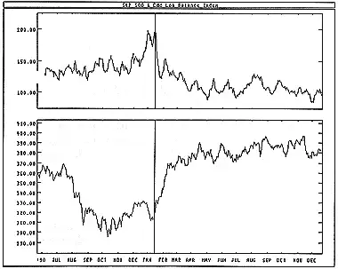

The Odd Lot Balance Index ("OLBI") is a market sentiment indicator that shows the ratio of odd lot sales to purchases (an "odd lot" is a stock transaction of less than 100 shares). The assumption is that the "odd lotters," the market's smallest traders, don't know what they are doing.
(Unfortunately, the trading of 99 share lots in an effort to skirt the "up-tick" rule, which requires that specialists take short positions only when prices move upward, has rendered odd lot indicators less reliable.)
When the Odd Lot Balance Index is high, odd lotters are selling more than they are buying and are therefore bearish on the market. To trade contrarily to the odd lotters, you should buy when they are selling (as indicated by a high OLBI) and sell when the odd lotters are bullish and buying (as indicated by a low OLBI).
You can smooth day-to-day fluctuations of the Odd Lot Balance Index by plotting a 10-day moving average of the Index.
The following chart shows the S&P 500 and a 10-day moving average of the Odd Lot Balance Index.
I drew a vertical line when the odd lotters were excessively pessimistic--which turned out to be a good time to buy.